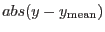
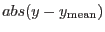

This function returns the probability that a gaussian-distributed variable  will depart from the mean
by greater than
. For values obeying a gaussian distribution of standard deviation
will depart from the mean
by greater than
. For values obeying a gaussian distribution of standard deviation  , the probability
, the probability  of a given
of a given  value (or greater) occurring by chance is
value (or greater) occurring by chance is
function integratedGaussProb(testY, meanY, sigma) result(probability)
real(single), intent(in) :: testY, meanY, sigma
real(single) :: probability
end function integratedGaussProb